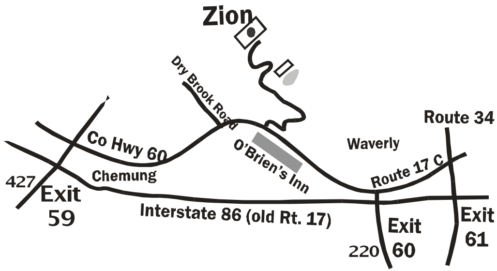

Zion Academy
Zion Academy
Mailing Address:
Phone Number: (607) 565-2801
E-mail Address: zionacademy@zion.edu
Take I-86 (Route 17) to Waverly Exit 60 (Route 220 Exit). Go north on Route 220, until it ends. Turn left onto Rt 17C. Drive up the hill until you see O’Brien’s Inn on the left. On the right, you will see the sign and entrance for Zion Fellowship. Drive to the very top of the hill.

Drive up Zion Road to the top of the hill until you see ZFI headquarters. If you are going to the Zion Academy classrooms, turn left to the ZA parking lot. Otherwise, if you are going to the Zion Academy offices or visiting while school is not in session, continue driving and park by the railing to enter through the main lobby of the Zion Fellowship building.